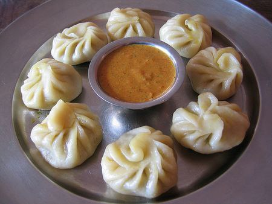
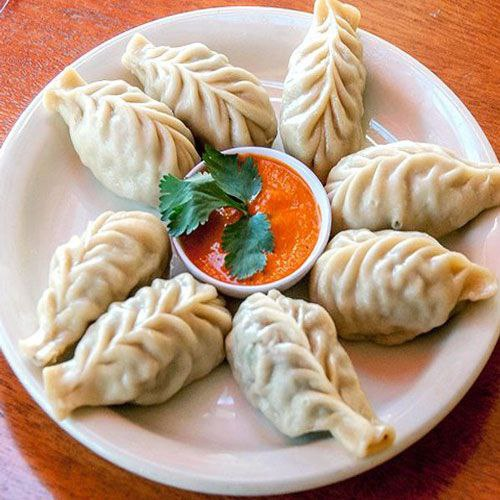

Download My 2025 Calandar Download
Back To Top
Kuzuzangpo and Welcome to Tashi Momo Hub.
Momo is a type of dumpling native to Tibet, and it has become a popular dish throughout Nepal, Bhutan, and parts of India.
Spread to Nepal: The dish was introduced to Nepal by the Newar traders of the Kathmandu Valley, who brought it back from Tibet. The name “momo” is derived from the Tibetan word "mog mog".
Adaptation: In Nepal, momo was adapted
with local spices and cooking methods. While Tibetan momo were often filled with yak meat, Nepalese momo started using buffalo, chicken, or vegetables.
Regional Variations: Over time, momo spread across the Himalayan regions, gaining
popularity in India (especially in Sikkim, Darjeeling, and the Northeast). Each region introduced its own flavors, fillings, and sauces.
Modern Popularity: Today, momo is a beloved street food and restaurant item in South Asia, with
varieties like steamed, fried, and jhol (soup) momo.
In Bhutan, momo is a popular and beloved dish, often enjoyed as a snack or meal. Bhutanese momos are typically filled with minced meat (commonly pork, beef, or chicken), cheese, or vegetables. What sets them apart is the generous use of local spices, garlic, ginger, and chili, giving them a flavorful and spicy taste that reflects Bhutanese cuisine. They are usually steamed but can also be fried or served with soup. Momos are commonly made at home during special occasions and are also widely available at restaurants and street stalls.
Welcome to Tashi MOMO Hub
At Tashi MOMO Hub, we serve fresh, handmade momos filled with flavor and love. Every momo is prepared with care using quality ingredients and traditional recipes that bring the taste of the Himalayas to your plate.
Whether you love steamed, fried, or spicy chili momo, we have something for everyone. Our goal is to give you a warm, satisfying meal that feels like home. Tashi MOMO Hub is more than just a momo shop — it is a cozy place to relax, enjoy great
food, and share moments with friends and family. Come visit us and taste the difference in every bite.

Free verse for Tashi MOMO Hub
Tashi MOMO Hub is the place to be,
With Momo soft, warm, and brings smiles and peace,
Full of flavor, made with care
The hub is cozy, full of cheer,
Where family and friends gather
near.
Flavors dance, simple and true,
where every bite brings a joy.
- TG, client
| Sl.No | Types of Momo | Price |
|---|---|---|
| 1 | Ting Momo | Nu.70/- |
| 2 | Cheese Momo | Nu.50/- |
| 3 | Fried Cheese Momo | Nu.55/- |
| 4 | Potato Momo | Nu.55/- |
| 5 | Fried Potato Momo | Nu.60/- |
| 6 | Beef Momo | Nu.70/- |
| 7 | Fried Beef Momo | Nu.75/- |
| 8 | Chicken Momo | Nu.65/- |
| 9 | Fried Chicken Momo | Nu.70/- |
| 10 | Pork Momo | Nu.70/- |
| 11 | Fried Pork Momo | Nu.75/- |
| 12 | Lemon Tea | Nu.50/- |
| 13 | Coffee | Nu.50/- |
| 14 | Suja | Nu.50/- |
Tashi MOMO Hub
Located at Sombek Bowndara City, Below Sagg-Bari
Facebook Link for feedback➡
Download My 2025 Calandar Download
Back To Top